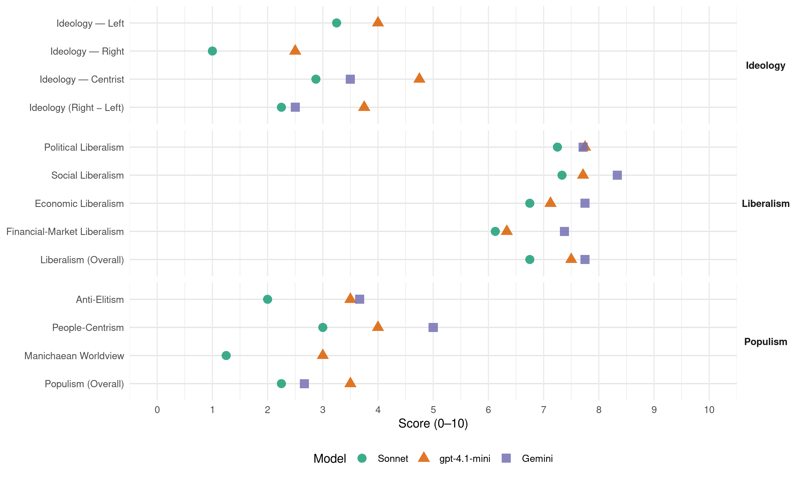

PPK (Peru, 2016)
manifesto_id 179611_201604
Get full text: This site shows derived annotations and short verbatim quotes only. The full manifesto text is © Manifesto Project / WZB — obtain it via manifesto-project.wzb.eu using the manifesto_id above.
Headline scores
| Dimension | Sonnet | gpt-4.1-mini | Gemini |
|---|---|---|---|
| Populism (Overall) | 2.2 | 3.5 | 2.7 |
| Anti-Elitism | 2.0 | 3.5 | 3.7 |
| People-Centrism | 3.0 | 4.0 | 5.0 |
| Manichaean Worldview | 1.2 | 3.0 | – |
| Ideology (Right − Left) | 2.2 | 3.8 | 2.5 |
| Liberalism (Overall) | 6.8 | 7.5 | 7.8 |
| Political Liberalism | 7.2 | 7.8 | 7.7 |
| Social Liberalism | 7.3 | 7.7 | 8.3 |
| Economic Liberalism | 6.8 | 7.1 | 7.8 |
| Financial-Market Liberalism | 6.1 | 6.3 | 7.4 |
Evidence per dimension
Economic Liberalism
Gemini · score 8.0 · verified · chunk 1
“beneficios de un mercado económico competitivo”
indispensable para que todos tengan acceso a los beneficios de un mercado económico competitivo.
Gemini · score 6.0 · verified · chunk 2
“asociaciones público privadas para el desarrollo de proyectos”
gobiernos locales en asociaciones público privadas para el desarrollo de proyectos inmobiliarios sobre suelo
Gemini · score 7.0 · verified · chunk 3
“participación de la inversión privada”
necesarias, la participación de la inversión privada en la puesta en valor y
Gemini · score 9.0 · verified · chunk 4
“aliente el consumo y la inversión”
reforma tributaria que aliente el consumo y la inversión; c) se reanimarán
Gemini · score 8.0 · verified · chunk 5
“promover la inversión privada en proyectos de riego”
ampliación de frontera agrícola y promoción de inversión privada en proyectos de riego Desarrollar un programa
Gemini · score 8.0 · verified · chunk 6
“adecuado funcionamiento de la economía de mercado”
fundamental para la vida en democracia y para el adecuado funcionamiento de la economía de mercado. No hay seguridad
Gemini · score 8.0 · verified · chunk 7
“facilitar las condiciones de la inversión”
para prevenir y solucionar pacíficamente los conflictos sociales, facilitar las condiciones de la inversión pública y privada, y hacer viable la gobernabilidad
Gemini · score 8.0 · verified · chunk 8
“faciliten la inversión en infraestructura”
y a los procesos que faciliten la inversión en infraestructura y contribuyan a mejorar la competitividad
gpt-4.1-mini · score 7.0 · verified · chunk 1
“necesitamos restablecer el dinamismo de nuestra economía”
Necesitamos restablecer el dinamismo de nuestra economía. Sin una economía próspera no se puede reducir la pobreza, flagelo que afecta aún hoy a casi la cuarta parte de nuestra población.
gpt-4.1-mini · score 7.0 · verified · chunk 2
“Fortalecer la educación alternativa, ampliar los servicios de cuidado infantil y ofrecer créditos para emprendimientos”
Facilitar el acceso a más y mejores empleos Fortalecer la educación alternativa, ampliar los servicios de cuidado infantil y ofrecer créditos para emprendimientos, para así facilitar la creación de negocios y mejorar el acceso al mercado laboral para más mujeres, sobre todo aquellas que son jefas de familia.
gpt-4.1-mini · score 7.0 · verified · chunk 3
“facilitar el ingreso de mujeres al mercado laboral mediante convenios estratégicos con el sector público y el sector privado”
Implementar el Plan de Acción Intersectorial de la Dirección de Desarrollo y Promoción de la Autonomía Económica de la Mujer, priorizando en sus Planes de Desarrollo Concertado facilitar el ingreso de mujeres al mercado laboral mediante convenios estratégicos con el sector público y el sector privado.
gpt-4.1-mini · score 7.0 · verified · chunk 4
“reducción del IGV”
Proponemos un programa de estímulo temporal al consumo e inversión privada mediante simplificaciones y reducciones en las tasas de impuestos. … Primero, pre-anunciar una reducción de 1 punto porcentual por año en el impuesto general a las ventas (IGV) hasta llegar al 15% en 2019; segundo, permitir a las grandes empresas, aquellas que facturen 2300 UIT’s o más, que puedan descontar el integro de su inversión física en contra de su monto imponible; y tercero, reducir las escalas del impuesto personal a solo tres, manteniendo la reducción progresiva de la tasa impositiva a 26% en 2017.
gpt-4.1-mini · score 9.0 · verified · chunk 5
“promover la inversión privada en el desarrollo de nuevos campos”
LINEAMIENTO ESTRATÉGICO 1: Desarrollo de la industria del gas natural promoviendo su uso eficiente y seguro. Promover la inversión privada en el desarrollo de nuevos campos y nueva infraestructura de explotación de gas natural.
gpt-4.1-mini · score 7.0 · verified · chunk 6
“promover la inversión pública y privada”
…Se hace imprescindible desarrollar una infraestructura que conecte, articule y dote de condiciones a los destinos y productos por desarrollar, para lo cual es necesario promover la inversión pública y privada que permita consolidar productos, destinos y macrodestinos…
gpt-4.1-mini · score 6.0 · verified · chunk 7
“simplificar los requisitos y procedimientos para que el proceso de aprobación sea más flexible y ágil”
…3.4 Acción Estratégica 4: Reforma del SNIP Sincerar la base de datos del SNIP (Sistema Nacional de Inversión Pública), priorizando y desarrollando los proyectos de más alto impacto en la economía nacional…
gpt-4.1-mini · score 7.0 · verified · chunk 8
“Simplificar los requisitos y procedimientos para que el proceso de aprobación sea más flexible y ágil”
Simplificar los requisitos y procedimientos para que el proceso de aprobación sea más flexible y ágil, articulando los proyectos de inversión pública con los planes sectoriales.
Sonnet · score 7.0 · verified · chunk 1
“acceso a los beneficios de un mercado económico competitivo”
Consideramos que no es suficiente que el Estado genere la infraestructura física y la regulación jurídica indispensable para que todos tengan acceso a los beneficios de un mercado económico competitivo.
Sonnet · score 6.0 · verified · chunk 2
“alianzas público-privadas”
Mecanismos como obras por impuestos, alianzas público-privadas, transferencias condicionadas, responsabilidad social, entre otras serán promovidos
Sonnet · score 6.0 · verified · chunk 3
“participación de la inversión privada”
que fomente, con las reservas necesarias, la participación de la inversión privada en la puesta en valor y aprovechamiento turístico de los sitios arqueológicos
Sonnet · score 7.0 · verified · chunk 4
“reducción del IGV”
la reducción del IGV, tal como ya ha sido propuesto; y b) un nuevo régimen para las empresas que facturen 2,300 UIT’s o menos
Sonnet · score 8.0 · verified · chunk 5
“promover la inversión privada en proyectos de riego”
Desarrollar un programa de ampliación de la frontera agrícola y promoción de la inversión privada en proyectos de riego, comprendiendo habilitación de tierras nuevas
Sonnet · score 7.0 · verified · chunk 6
“Incentivar la inversión privada nacional e internacional”
3.2. Acción Estratégica 2: Incentivar la inversión privada nacional e internacional. Reducir y agilizar los excesivos trámites burocráticos exigidos a los inversionistas en turismo.
Sonnet · score 6.0 · verified · chunk 7
“facilitar las condiciones de la inversión pública y privada”
El Sistema Nacional de Prevención y Solución Pacífica de Conflictos Sociales fortalecerá la capacidad del Estado para prevenir y solucionar pacíficamente los conflictos sociales, facilitar las condiciones de la inversión pública y privada
Sonnet · score 7.0 · verified · chunk 8
“Sincerar los costos de los permisos y eliminar tasas innecesarias”
Acción Estratégica 1: Permisos más baratos y rápidos. Sincerar los costos de los permisos y eliminar tasas innecesarias.
Financial-Market Liberalism
Gemini · score 7.0 · verified · chunk 1
“Entregar a COFIDE la puesta en marcha”
Entregar a COFIDE la puesta en marcha del proyecto y el capital asignado
Gemini · score 7.0 · verified · chunk 2
“el 80% de adultos posee una cuenta en el sistema financiero”
Al 2021, el 80% de adultos posee una cuenta en el sistema financiero.
Gemini · score 7.0 · verified · chunk 3
“incentivos en la banca privada”
Campesinas con aval del Estado. Generar incentivos en la banca privada que financie estas iniciativas. Instituciones
Gemini · score 8.0 · verified · chunk 4
“Generar incentivos en la banca privada”
Comunidades Campesinas con aval del Estado. Generar incentivos en la banca privada que financie estas
Gemini · score 7.0 · verified · chunk 5
“fortalecerá la capacidad operativa de AGROBANCO”
pequeños productores y campesinos de sierra y selva. Se fortalecerá la capacidad operativa de AGROBANCO con el fin de
Gemini · score 8.0 · verified · chunk 6
“secreto bancario y la reserva tributaria”
Inteligencia Financiera (UIF) al secreto bancario y la reserva tributaria para el análisis de un caso
Gemini · score 7.0 · verified · chunk 7
“supervisar integralmente el funcionamiento de todas las cooperativas”
Otorgamiento a la Superintendencia de Banca, Seguros y AFP (SBS) del mandato para supervisar integralmente el funcionamiento de todas las cooperativas de ahorro y crédito.
Gemini · score 8.0 · verified · chunk 8
“posicionamiento económico, financiero y comercial”
representación diplomática y posicionamiento económico, financiero y comercial, que logren implementarlas.
gpt-4.1-mini · score 6.0 · verified · chunk 1
“financiar este aumento es factible”
Con un crecimiento económico revitalizado, financiar este aumento es factible. Junto con los cambios que proponemos en el sistema judicial y en el fortalecimiento del sistema penitenciario.
gpt-4.1-mini · score 7.0 · verified · chunk 2
“Estrategia Nacional de Inclusión Financiera (ENIF), seguiremos promocionando la inclusión financiera”
4.1.2. Ruta estratégica Seguir con la implementación de la Estrategia Nacional de Inclusión Financiera Instituciones responsables: MIDIS, MEF, SBS, MTC, gobiernos regionales, la Comisión Multisectorial de Inclusión Financiera.
gpt-4.1-mini · score 6.0 · verified · chunk 4
“AGROBANCO con un aporte de 300 millones de soles para ampliar la cobertura del servicio de crédito”
Incrementar el capital de AGROBANCO con un aporte de 300 millones de soles para ampliar la cobertura del servicio de crédito a pequeños productores. Igualmente se elevará el fondo de garantía para seguro agrario con un aporte inicial de 100 millones de soles.
gpt-4.1-mini · score 7.0 · verified · chunk 5
“incrementar el capital de AGROBANCO con un aporte de 300 millones”
d) Incrementar el capital de AGROBANCO con un aporte de 300 millones de soles para ampliar la cobertura del servicio de crédito a pequeños productores. Igualmente se elevará el fondo de garantía para seguro agrario con un aporte inicial de 100 millones de soles.
gpt-4.1-mini · score 6.0 · verified · chunk 6
“Unidad de Inteligencia Financiera (UIF) al secreto bancario”
…3.7.3 En el 2016, insistir ante el Congreso de la República la aprobación prioritaria de los siguientes proyectos de ley: 1) Acceso de la Unidad de Inteligencia Financiera (UIF) al secreto bancario y la reserva tributaria para el análisis de un caso reportado. 2) Otorgamiento a la Superintendencia de Banca, Seguros y AFP (SBS) del mandato para supervisar integralmente el funcionamiento de todas las cooperativas de ahorro y crédito…
gpt-4.1-mini · score 6.0 · verified · chunk 7
“Acceso de la Unidad de Inteligencia Financiera (UIF) al secreto bancario y la reserva tributaria”
…4.2.3 En el 2016, insistir ante el Congreso de la República la aprobación prioritaria de los siguientes proyectos de ley: 1) Acceso de la Unidad de Inteligencia Financiera (UIF) al secreto bancario y la reserva tributaria para el análisis de un caso reportado…
Sonnet · score 6.0 · verified · chunk 1
“aumento de tasas de interés en EE.UU.”
El aumento de tasas de interés en perspectiva en EE.UU. ha venido fortaleciendo al dólar y presionando al BCRP a subir sus tasas, golpeando así aún más la confianza del consumidor y del inversionista peruano.
Sonnet · score 6.0 · verified · chunk 2
“inclusión financiera de las poblaciones vulnerables”
seguiremos promocionando la inclusión financiera de las poblaciones vulnerables, en base a los pilares acceso, uso y calidad
Sonnet · score 5.0 · verified · chunk 3
“creación del Banco de Fomento Minero”
Evaluaremos la formación de un Banco de Fomento Minero que amplie la frontera minera facilitando el desarrollo de los pequeños y medianos operadores mineros
Sonnet · score 6.0 · verified · chunk 4
“banca privada que financie estas iniciativas”
Generar incentivos en la banca privada que financie estas iniciativas. Instituciones responsables: SERFOR, Gobiernos Regionales, PCM.
Sonnet · score 7.0 · verified · chunk 5
“servicio de crédito agrícola es caro y de difícil acceso”
el servicio de crédito agrícola es caro y de difícil acceso, convirtiéndose en muchos casos en la principal restricción para una actividad agraria más dinámica e innovadora
Sonnet · score 6.0 · verified · chunk 6
“Acceso de la Unidad de Inteligencia Financiera (UIF) al secreto bancario”
1) Acceso de la Unidad de Inteligencia Financiera (UIF) al secreto bancario y la reserva tributaria para el análisis de un caso reportado.
Sonnet · score 6.0 · verified · chunk 7
“Acceso de la Unidad de Inteligencia Financiera (UIF) al secreto bancario”
1) Acceso de la Unidad de Inteligencia Financiera (UIF) al secreto bancario y la reserva tributaria para el análisis de un caso reportado.
Sonnet · score 7.0 · verified · chunk 8
“posicionamiento económico, financiero y comercial”
poner en marcha la dinámica y las tácticas de representación diplomática y posicionamiento económico, financiero y comercial
Political Liberalism
Gemini · score 8.0 · verified · chunk 1
“derecho de vivir en paz en una sociedad democrática”
la tranquilidad de la vida cotidiana, la estabilidad jurídica, el derecho de vivir en paz en una sociedad democrática y que respeta
Gemini · score 7.0 · verified · chunk 2
“garantizando su derecho a la intimidad personal”
salud sexual y reproductiva garantizando su derecho a la intimidad personal y a la información.
Gemini · score 7.0 · verified · chunk 3
“derechos de las personas con discapacidad”
OBJETIVO GENERAL: DEFENDER LOS derechos de las personas con discapacidad Y LOGRAR SU INCLUSIÓN CON
Gemini · score 8.0 · verified · chunk 4
“autonomía institucional a la ANA”
Daremos autonomía institucional a la ANA –en la actualidad adscrita al Ministerio de Agricultura
Gemini · score 8.0 · verified · chunk 6
“independencia judicial es uno de los más graves”
desarrollo económico y social. El descrédito de nuestra independencia judicial es uno de los más graves a nivel global
Gemini · score 8.0 · verified · chunk 7
“hacer viable la gobernabilidad democrática”
solucionar pacíficamente los conflictos sociales, facilitar las condiciones de la inversión pública y privada, y hacer viable la gobernabilidad democrática del país. El Sistema estará adscrito
Gemini · score 8.0 · verified · chunk 8
“transparencia y rendición de cuentas”
LINEAMIENTO ESTRATÉGICO 5: TRANSPARENCIA Y RENDICIÓN DE CUENTAS. 5.1. Acción Estratégica 1
gpt-4.1-mini · score 8.0 · verified · chunk 1
“respetar la Constitución y las leyes y garantizar los derechos y libertades fundamentales”
Creemos que el Estado debe consolidar el sistema democrático, respetar la Constitución y las leyes y garantizar los derechos y libertades fundamentales que permitan un ejercicio libre de la ciudadanía.
gpt-4.1-mini · score 8.0 · verified · chunk 2
“Sistema Integrado de Información Social, adscrito a la Presidencia del Consejo de Ministros (PCM)”
a) Al 2018, tener un Sistema Integrado de Información Social, adscrito a la Presidencia del Consejo de Ministros (PCM), que refleje de manera focalizada la diversidad socio-económica y cultural del país y las necesidades más urgentes de inclusión social.
gpt-4.1-mini · score 8.0 · verified · chunk 3
“la Convención Interamericana sobre la protección de los Derechos Humanos de las personas mayores”
1.1. Acción estratégica 1: Inmediata suscripción de la Convención Interamericana sobre la protección de los Derechos Humanos de las personas mayores. La Convención, aprobada por la OEA el 15 de junio de 2015, ha establecido obligaciones concretas para garantizar los derechos de las personas adultas mayores, incluyendo el derecho a la participación activa en la sociedad, y el derecho a un sistema integral de cuidados, entre otros aspectos.
gpt-4.1-mini · score 7.0 · verified · chunk 4
“Ley de Fortalecimiento de la Responsabilidad y Transparencia Fiscal”
Proponemos mantener el déficit estructural por encima de la meta de 1% del PBI que establece la Ley de Fortalecimiento de la Responsabilidad y Transferencia Fiscal (LFRTF)9 y llevarlo hasta un déficit máximo del 3% con el compromiso de volver al déficit que obliga esta ley en 2021.
gpt-4.1-mini · score 8.0 · verified · chunk 5
“cumpliendo el mandato del Artículo 8º de la Constitución”
1.1. Acción estratégica 1: Dar prioridad al agro cumpliendo el mandato del Artículo 8º de la Constitución. En cumplimiento del Artículo 88º de la Constitución, donde se dispone que “el Estado apoya preferentemente el desarrollo agrario”…
gpt-4.1-mini · score 8.0 · verified · chunk 6
“confianza ciudadana en el sistema de justicia”
…aumentar del 34% (2014) al 55% (2020) la confianza ciudadana en el sistema de justicia, en función al indicador “Personas que tienen confianza en el sistema judicial (porcentaje)”, medido por el Barómetro de las Américas de LAPOP de la Universidad de Vanderbilt, Estados Unidos de América…
gpt-4.1-mini · score 7.0 · verified · chunk 7
“cumplimiento de los tratados y de las recomendaciones contenidas en los informes de los órganos supranacionales competentes”
…1.1 Acción estratégica 1: Cumplimiento de los tratados y de las recomendaciones contenidas en los informes de los órganos supranacionales competentes. 1.1.1 Asegurar nuestra activa participación en la elaboración de nuevas normas de derechos humanos…
gpt-4.1-mini · score 8.0 · verified · chunk 8
“Plan Nacional de Modernización de Gestión Pública”
Acaba de aprobarse una norma metodológica institucional (octubre del 2015), enmarcada en un Plan Nacional de Modernización de Gestión Pública, para liberar a nuestras misiones de cargas burocráticas y reglamentos obsoletos para agilizar sus funciones y diversificar su ámbito de acción.
Sonnet · score 8.0 · verified · chunk 1
“consolidar el sistema democrático, respetar la Constitución”
Creemos que el Estado debe consolidar el sistema democrático, respetar la Constitución y las leyes y garantizar los derechos y libertades fundamentales que permitan un ejercicio libre de la ciudadanía, la prensa y los sectores productivos.
Sonnet · score 6.0 · verified · chunk 2
“derechos fundamentales de los niños y adolescentes”
velando por los derechos fundamentales de los niños y adolescentes en trámites judiciales para filiación, tenencia, patria potestad
Sonnet · score 7.0 · verified · chunk 3
“sujeto de derecho en el Código Civil”
Reformar el Código Civil para que las personas discapacitadas sean reconocidas como sujeto de derecho y no como objeto de protección
Sonnet · score 7.0 · verified · chunk 4
“transparencia en la rendición de cuentas”
la falta de transparencia en la rendición de cuentas son solo algunos de los problemas que deben ser abordados. Nuestra propuesta… se dirige a reformar la administración del país sobre la base de una gestión eficiente, transparente y participativa
Sonnet · score 7.0 · verified · chunk 5
“aprobada por el Congreso de la República”
La revisión de la Ley Orgánica de Hidrocarburos (Ley Nº 26221) será sustentada por el Poder Ejecutivo (MINEM, MEF), para ser aprobada por el Congreso de la República.
Sonnet · score 8.0 · verified · chunk 6
“sistema de justicia eficiente y confiable es fundamental para la vida en democracia”
La existencia de un sistema de justicia eficiente y confiable es fundamental para la vida en democracia y para el adecuado funcionamiento de la economía de mercado.
Sonnet · score 8.0 · verified · chunk 7
“Reformar el Consejo Nacional de la Magistratura”
4.4 Acción estratégica 4: Reformar el Consejo Nacional de la Magistratura (CNM) y el sistema de justicia.
Sonnet · score 7.0 · verified · chunk 8
“Transparencia y Rendición de Cuentas”
LINEAMIENTO ESTRATÉGICO 5: TRANSPARENCIA Y RENDICIÓN DE CUENTAS. 5.1. Acción Estratégica 1: Crear e implementar la Autoridad Nacional
Liberalism (Overall)
Gemini · score 8.0 · verified · chunk 1
“beneficios de un mercado económico competitivo”
indispensable para que todos tengan acceso a los beneficios de un mercado económico competitivo.
Gemini · score 7.0 · verified · chunk 2
“ley de no-discriminación laboral hacía la mujer”
se propondrá una ley de no-discriminación laboral hacía la mujer, buscando la igualdad de salarios
Gemini · score 7.0 · verified · chunk 3
“participación de la inversión privada”
necesarias, la participación de la inversión privada en la puesta en valor y
Gemini · score 8.0 · verified · chunk 4
“aliente el consumo y la inversión”
reforma tributaria que aliente el consumo y la inversión; c) se reanimarán
Gemini · score 8.0 · verified · chunk 5
“promover la inversión privada en proyectos de riego”
ampliación de frontera agrícola y promoción de inversión privada en proyectos de riego Desarrollar un programa
Gemini · score 8.0 · verified · chunk 6
“adecuado funcionamiento de la economía de mercado”
fundamental para la vida en democracia y para el adecuado funcionamiento de la economía de mercado. No hay seguridad
Gemini · score 8.0 · verified · chunk 7
“plena igualdad de derechos y libertades”
PROPONEMOS? OBJETIVO GENERAL: LA PLENA IGUALDAD DE DERECHOS Y LIBERTADES CIUDADANAS, Y LA NO DISCRIMINACIÓN.
Gemini · score 8.0 · verified · chunk 8
“reformas ortodoxas coherentes con el proceso”
normalizar la política económica a través de reformas ortodoxas coherentes con el proceso de globalización.
gpt-4.1-mini · score 7.0 · verified · chunk 1
“respetar la Constitución y las leyes y garantizar los derechos y libertades fundamentales”
Creemos que el Estado debe consolidar el sistema democrático, respetar la Constitución y las leyes y garantizar los derechos y libertades fundamentales que permitan un ejercicio libre de la ciudadanía.
gpt-4.1-mini · score 8.0 · verified · chunk 2
“Sistema Integrado de Información Social, adscrito a la Presidencia del Consejo de Ministros (PCM)”
a) Al 2018, tener un Sistema Integrado de Información Social, adscrito a la Presidencia del Consejo de Ministros (PCM), que refleje de manera focalizada la diversidad socio-económica y cultural del país y las necesidades más urgentes de inclusión social.
gpt-4.1-mini · score 8.0 · verified · chunk 3
“Ley N° 1903 contra el acoso político y la discriminación por razones de género”
Al 2018, se promulgarán y pondrán en práctica las siguientes normas sobre la igualdad de género: Ley N° 3682 de implementación de las cuotas de género en el nombramiento de jueces y magistrados. Ley N° 1903 contra el acoso político y la discriminación por razones de género.
gpt-4.1-mini · score 7.0 · verified · chunk 4
“reducción del IGV”
Proponemos un programa de estímulo temporal al consumo e inversión privada mediante simplificaciones y reducciones en las tasas de impuestos. … Primero, pre-anunciar una reducción de 1 punto porcentual por año en el impuesto general a las ventas (IGV) hasta llegar al 15% en 2019; segundo, permitir a las grandes empresas, aquellas que facturen 2300 UIT’s o más, que puedan descontar el integro de su inversión física en contra de su monto imponible; y tercero, reducir las escalas del impuesto personal a solo tres, manteniendo la reducción progresiva de la tasa impositiva a 26% en 2017.
gpt-4.1-mini · score 8.0 · verified · chunk 5
“cumpliendo el mandato del Artículo 8º de la Constitución”
1.1. Acción estratégica 1: Dar prioridad al agro cumpliendo el mandato del Artículo 8º de la Constitución. En cumplimiento del Artículo 88º de la Constitución, donde se dispone que “el Estado apoya preferentemente el desarrollo agrario”…
gpt-4.1-mini · score 7.0 · verified · chunk 6
“confianza ciudadana en el sistema de justicia”
…aumentar del 34% (2014) al 55% (2020) la confianza ciudadana en el sistema de justicia, en función al indicador “Personas que tienen confianza en el sistema judicial (porcentaje)”, medido por el Barómetro de las Américas de LAPOP de la Universidad de Vanderbilt, Estados Unidos de América…
gpt-4.1-mini · score 7.0 · verified · chunk 7
“cumplimiento de los tratados y de las recomendaciones contenidas en los informes de los órganos supranacionales competentes”
…1.1 Acción estratégica 1: Cumplimiento de los tratados y de las recomendaciones contenidas en los informes de los órganos supranacionales competentes. 1.1.1 Asegurar nuestra activa participación en la elaboración de nuevas normas de derechos humanos…
gpt-4.1-mini · score 8.0 · verified · chunk 8
“Plan Nacional de Modernización de Gestión Pública”
Acaba de aprobarse una norma metodológica institucional (octubre del 2015), enmarcada en un Plan Nacional de Modernización de Gestión Pública, para liberar a nuestras misiones de cargas burocráticas y reglamentos obsoletos para agilizar sus funciones y diversificar su ámbito de acción.
Sonnet · score 7.0 · verified · chunk 1
“consolidar el sistema democrático, respetar la Constitución”
Creemos que el Estado debe consolidar el sistema democrático, respetar la Constitución y las leyes y garantizar los derechos y libertades fundamentales que permitan un ejercicio libre de la ciudadanía, la prensa y los sectores productivos.
Sonnet · score 6.0 · verified · chunk 2
“igualdad de salarios para la misma función independiente del género”
ley de no-discriminación laboral hacía la mujer, buscando la igualdad de salarios para la misma función independiente del género del trabajador
Sonnet · score 7.0 · verified · chunk 3
“igualdad de género en la gestión pública”
a los precedentes más destacados en materia de igualdad de género en la gestión pública, en las organizaciones sociales
Sonnet · score 6.0 · verified · chunk 4
“marco eficiente y competitivo”
lograr un marco eficiente y competitivo, permitirá proponernos como un punto atractivo de inversión para un producción con mayor inclusión de conocimiento, innovación, y valor agregado
Sonnet · score 7.0 · verified · chunk 5
“promover la inversión privada en proyectos de riego”
Desarrollar un programa de ampliación de la frontera agrícola y promoción de la inversión privada en proyectos de riego, comprendiendo habilitación de tierras nuevas
Sonnet · score 7.0 · verified · chunk 6
“adecuado funcionamiento de la economía de mercado”
La existencia de un sistema de justicia eficiente y confiable es fundamental para la vida en democracia y para el adecuado funcionamiento de la economía de mercado.
Sonnet · score 7.0 · verified · chunk 7
“Aprobación de la Unión Civil No Matrimonial”
4.5.2 Aprobación de la Unión Civil No Matrimonial, que sirva para el reconocimiento y protección jurídica de las uniones formadas por parejas del mismo sexo
Sonnet · score 7.0 · verified · chunk 8
“destrabe de inversiones”
procesos que faciliten la inversión en infraestructura y contribuyan a mejorar la competitividad del país (destrabe de inversiones)
Anti-Elitism
Gemini · score 4.0 · verified · chunk 1
“múltiples malos ejemplos en las altas esferas”
la evasión tributaria masiva y los múltiples malos ejemplos en las altas esferas gubernamentales.
Gemini · score 4.0 · verified · chunk 5
“maraña burocrática ajena a la realidad rural”
desarrollo agrario y se distrae dentro de una maraña burocrática ajena a la realidad rural. En cuanto a las oportunidades
Gemini · score 3.0 · verified · chunk 6
“alcanzan a las más altas esferas políticas”
altos niveles de corrupción, los mismos que alcanzan a las más altas esferas políticas. La corrupción política alcanzó
gpt-4.1-mini · score 6.0 · verified · chunk 1
“la corrupción creciente en su administración pública”
Lucha contra la corrupción. El Perú enfrenta la amenaza de la corrupción creciente en su administración pública y en la administración de justicia. Nuestro aparato gubernamental, demasiado complicado y poco efectivo, favorece la corrupción.
gpt-4.1-mini · score 2.0 · verified · chunk 4
“sobrerregulación”
Entre los más influyentes tenemos la sobrerregulación. Sólo en el sector minero había 201 normas legales en 2014, cuando tan solo eran 9 en 2001 (Chirinos, R., 2015)4. Los proyectos mineros que se han paralizado como consecuencia de esta sobrerregulación le han restado al crecimiento económico, en promedio, más de 2.3 puntos porcentuales (IPE, 2015)5.
gpt-4.1-mini · score 2.0 · verified · chunk 6
“corrupción política alcanzó ribetes dramáticos”
…dos expresidentes cuestionados por hechos de corrupción cometidos en el ejercicio del poder. Asimismo, la actual primera dama se encuentra al borde de varios procesos penales por las mismas razones. La corrupción política alcanzó ribetes dramáticos en la década del noventa. La reacción moralizadora permitió que un expresidente se encuentre encarcelado…
gpt-4.1-mini · score 4.0 · verified · chunk 7
“la maquinaria de corrupción que fue el Servicio de Inteligencia Nacional (SIN)”
…que da cuenta, en forma contundente, que a lo largo de quince años de democracia el país no ha logrado desactivar y sustituir la maquinaria de corrupción que fue el Servicio de Inteligencia Nacional (SIN) Carecemos de un órgano civil y profesional…
Sonnet · score 4.0 · verified · chunk 1
“pervive un Estado ineficiente, que no está atento”
En medio de todo ello, pervive un Estado ineficiente, que no está atento a las necesidades del país y que utiliza los recursos financieros públicos sin previsión, sin transparencia y a veces en su propio beneficio.
Sonnet · score 1.0 · verified · chunk 2
“mala administración de los gobiernos locales”
La deficiente gestión de las EPS tiene su origen en la mala administración de los gobiernos locales. Se dispondrá la rápida inserción
Sonnet · score 2.0 · verified · chunk 3
“escaso interés mostrado por los diferentes gobiernos”
Esta severa limitación presupuestal solo se explica por el escaso interés mostrado por los diferentes gobiernos –a pesar de los esfuerzos de muchos funcionarios del sector–
Sonnet · score 2.0 · verified · chunk 4
“burocratismo conservador de hace décadas”
Eliminando los sobre costos y las regulaciones perversas –típica herencia del burocratismo conservador de hace décadas– nuestras ventajas comparativas latentes van a emerger
Sonnet · score 1.0 · verified · chunk 5
“maraña burocrática ajena a la realidad rural”
El sector público orientado al agro no ejerce el rol que le corresponde como conductor y promotor del desarrollo agrario y se distrae dentro de una maraña burocrática ajena a la realidad rural.
Sonnet · score 3.0 · verified · chunk 6
“frecuente impunidad y corrupción del sistema de justicia penal”
Entre los primeros, destaca la ausencia de vigilancia y patrullaje en buena parte de los barrios del país, la frecuente impunidad y corrupción del sistema de justicia penal, y la sobrepoblación carcelaria.
Sonnet · score 2.0 · verified · chunk 7
“maquinaria de corrupción que fue el Servicio de Inteligencia Nacional”
a lo largo de quince años de democracia el país no ha logrado desactivar y sustituir la maquinaria de corrupción que fue el Servicio de Inteligencia Nacional (SIN)
Sonnet · score 1.0 · verified · chunk 8
“eliminar las normas inoperantes”
Esta Oficina será la encargada de eliminar las normas inoperantes y de fiscalizar que las entidades cumplan
Ideology — Centrist
Gemini · score 4.0 · verified · chunk 1
“intereses del pueblo antes que los intereses”
Debemos poner los intereses del pueblo antes que los intereses políticos personales, combatiendo
Gemini · score 3.0 · verified · chunk 6
“alcanzan a las más altas esferas políticas”
altos niveles de corrupción, los mismos que alcanzan a las más altas esferas políticas. La corrupción política alcanzó
gpt-4.1-mini · score 7.0 · verified · chunk 1
“respetar la Constitución y las leyes y garantizar los derechos y libertades fundamentales”
Creemos que el Estado debe consolidar el sistema democrático, respetar la Constitución y las leyes y garantizar los derechos y libertades fundamentales que permitan un ejercicio libre de la ciudadanía.
gpt-4.1-mini · score 4.0 · verified · chunk 4
“programa de reactivación económica”
Nuestra propuesta se centra en cuatro ejes: 1) un programa de reactivación económica; 2) retomar la reforma estructural; 3) provisión de seguridad social de calidad; y 4) fortalecer la diversificación productiva.
gpt-4.1-mini · score 3.0 · verified · chunk 6
“fortalecer el espíritu fiscalizador ciudadano”
…fortalecer el espíritu fiscalizador ciudadano, para que desaparezcan las actitudes permisivas hacia políticos corruptos bajo lemas como “roba pero hace obras”. ¿QUÉ PROPONEMOS HACER? OBJETIVO GENERAL: CERO TOLERANCIA A LA CORRUPCIÓN Y FIN DE LA IMPUNIDAD LINEAMIENTO ESTRATÉGICO 1: Fortalecer la Comisión de Alto Nivel (CAN) Anticorrupción…
gpt-4.1-mini · score 5.0 · verified · chunk 7
“la defensa internacional del Estado Peruano”
…Fortalecer la Procuraduría Pública Especializada Supranacional, para mejorar la defensa internacional del Estado Peruano en temas de derechos humanos…
Sonnet · score 4.0 · verified · chunk 1
“intereses del pueblo antes que los intereses políticos”
Debemos poner los intereses del pueblo antes que los intereses políticos personales, combatiendo cualquier indicio de corrupción.
Sonnet · score 2.0 · verified · chunk 2
“necesidades más urgentes de inclusión social”
que refleje de manera focalizada la diversidad socio-económica y cultural del país y las necesidades más urgentes de inclusión social
Sonnet · score 2.0 · verified · chunk 3
“participación de la inversión privada en la puesta en valor”
que fomente, con las reservas necesarias, la participación de la inversión privada en la puesta en valor y aprovechamiento turístico de los sitios arqueológicos
Sonnet · score 3.0 · verified · chunk 4
“alianzas con el sector privado”
Fomentar y fortalecer alianzas con el sector privado. Alianzas con la cooperación internacional.
Sonnet · score 2.0 · verified · chunk 5
“agro próspero, competitivo, inclusivo y sostenible”
se adoptará un conjunto de estrategias y acciones políticas dirigidas a lograr un agro próspero, próspero, competitivo, inclusivo y sostenible, generando mayores ingresos para los productores
Sonnet · score 4.0 · verified · chunk 6
“política de Estado en materia judicial”
Este acuerdo establecerá las líneas matrices para una reforma integral del sistema de justicia, comprendiendo la asignación de los recursos necesarios y la participación activa de cada uno de los participantes en la implementación de un sistema de justicia independiente, eficiente, inclusivo y libre de corrupción.
Sonnet · score 3.0 · verified · chunk 7
“Estado moderno y descentralizado, basado en una gestión eficiente”
OBJETIVO GENERAL: POR UN ESTADO MODERNO Y DESCENTRALIZADO, BASADO EN UNA GESTIÓN EFICIENTE, TRANSPARENTE Y PARTICIPATIVA
Sonnet · score 3.0 · verified · chunk 8
“ciudadanos puedan hacer todos los trámites regulares”
ventanilla única donde los ciudadanos puedan hacer todos los trámites regulares con el Estado
Ideology — Left
gpt-4.1-mini · score 5.0 · verified · chunk 1
“la solidaridad, la libertad, la igualdad y la justicia social”
Nuestro Plan de Gobierno (PPK) se rigen por principios: la solidaridad, la libertad, la igualdad y la justicia social como valores fundamentales para el desarrollo individual y colectivo de nuestra sociedad.
gpt-4.1-mini · score 3.0 · verified · chunk 4
“sobrerregulación”
Entre los más influyentes tenemos la sobrerregulación. Sólo en el sector minero había 201 normas legales en 2014, cuando tan solo eran 9 en 2001 (Chirinos, R., 2015)4. Los proyectos mineros que se han paralizado como consecuencia de esta sobrerregulación le han restado al crecimiento económico, en promedio, más de 2.3 puntos porcentuales (IPE, 2015)5.
gpt-4.1-mini · score 4.0 · verified · chunk 6
“erradicar el soborno en los procedimientos de atención al ciudadano”
…es fundamental erradicar el soborno en los procedimientos de atención al ciudadano; eliminar la malversación (peculado) en las adquisiciones y contrataciones del Estado; y acabar con el control de espacios de poder por grupos que obstruyen las normas de selectividad e imponen el favoritismo y el nepotismo…
gpt-4.1-mini · score 4.0 · verified · chunk 7
“fortalecer y descentralizar la Procuraduría Pública Especializada en Corrupción de Funcionarios”
…4.2.4 Fortalecer y descentralizar la Procuraduría Pública Especializada en Corrupción de Funcionarios. 4.3 Acción estratégica 3: Establecer la “muerte civil” y la imprescriptibilidad en los casos graves de corrupción…
Sonnet · score 4.0 · verified · chunk 1
“reducir la gran desigualdad de ingresos”
La inversión social es fundamental para que se reduzca la gran desigualdad de ingresos que aún existe en el Perú, contrastando grupos socioeconómicos que viven como en países avanzados con una gran mayoría que todavía carece de servicios básicos.
Sonnet · score 4.0 · verified · chunk 2
“reducción de la pobreza y la inclusión social”
dentro de la estrategia nacional de largo plazo para la reducción de la pobreza y la inclusión social
Sonnet · score 4.0 · verified · chunk 3
“igualdad de salarios para la misma función”
buscando la igualdad de salarios para la misma función independiente del género del trabajador
Sonnet · score 4.0 · verified · chunk 4
“comunidades nativas y campesinas”
Ampliar los beneficios para las comunidades nativas y campesinas relacionadas con la conservación de bosques
Sonnet · score 3.0 · verified · chunk 5
“pequeños productores (2.2 millones) son los más perjudicados”
Los pequeños productores (2.2 millones) son los más perjudicados por el alto costo ya que solo el 14% recibe algún tipo de crédito (ASBANC, 2015)
Sonnet · score 2.0 · verified · chunk 6
“turismo incluyente por su estrategia de Turismo Rural Comunitario”
Al 2021 el Perú será reconocido por tener un turismo incluyente por su estrategia de Turismo Rural Comunitario.
Sonnet · score 3.0 · verified · chunk 7
“grupos en situación de vulnerabilidad”
LINEAMIENTO ESTRATÉGICO 4: Brindar especial atención a los grupos en situación de vulnerabilidad.
Sonnet · score 2.0 · verified · chunk 8
“tasas sociales para la población de bajos recursos”
Se dispondrán tasas sociales para la población de bajos recursos (por ejemplo, tasas de titulación más baratas
Ideology (Right − Left)
Gemini · score 3.0 · verified · chunk 1
“intereses del pueblo antes que los intereses”
Debemos poner los intereses del pueblo antes que los intereses políticos personales, combatiendo
Gemini · score 2.0 · verified · chunk 6
“alcanzan a las más altas esferas políticas”
altos niveles de corrupción, los mismos que alcanzan a las más altas esferas políticas. La corrupción política alcanzó
gpt-4.1-mini · score 5.0 · verified · chunk 1
“la solidaridad, la libertad, la igualdad y la justicia social”
Nuestro Plan de Gobierno (PPK) se rigen por principios: la solidaridad, la libertad, la igualdad y la justicia social como valores fundamentales para el desarrollo individual y colectivo de nuestra sociedad.
gpt-4.1-mini · score 3.0 · verified · chunk 4
“sobrerregulación”
Entre los más influyentes tenemos la sobrerregulación. Sólo en el sector minero había 201 normas legales en 2014, cuando tan solo eran 9 en 2001 (Chirinos, R., 2015)4. Los proyectos mineros que se han paralizado como consecuencia de esta sobrerregulación le han restado al crecimiento económico, en promedio, más de 2.3 puntos porcentuales (IPE, 2015)5.
gpt-4.1-mini · score 3.0 · verified · chunk 6
“corrupción política alcanzó ribetes dramáticos”
…dos expresidentes cuestionados por hechos de corrupción cometidos en el ejercicio del poder. Asimismo, la actual primera dama se encuentra al borde de varios procesos penales por las mismas razones. La corrupción política alcanzó ribetes dramáticos en la década del noventa. La reacción moralizadora permitió que un expresidente se encuentre encarcelado…
gpt-4.1-mini · score 4.0 · verified · chunk 7
“la maquinaria de corrupción que fue el Servicio de Inteligencia Nacional (SIN)”
…que da cuenta, en forma contundente, que a lo largo de quince años de democracia el país no ha logrado desactivar y sustituir la maquinaria de corrupción que fue el Servicio de Inteligencia Nacional (SIN) Carecemos de un órgano civil y profesional…
Sonnet · score 3.0 · verified · chunk 1
“reducir la gran desigualdad de ingresos”
La inversión social es fundamental para que se reduzca la gran desigualdad de ingresos que aún existe en el Perú, contrastando grupos socioeconómicos que viven como en países avanzados con una gran mayoría que todavía carece de servicios básicos.
Sonnet · score 3.0 · verified · chunk 2
“reducción de la pobreza y la inclusión social”
dentro de la estrategia nacional de largo plazo para la reducción de la pobreza y la inclusión social
Sonnet · score 2.0 · verified · chunk 3
“igualdad de salarios para la misma función”
buscando la igualdad de salarios para la misma función independiente del género del trabajador
Sonnet · score 2.0 · verified · chunk 4
“crecimiento sostenido e impulsar”
pensamos que en base a estos cuatro ejes es posible generar un crecimiento sostenido e impulsar al mismo tiempo la formalización de millones de trabajadores
Sonnet · score 2.0 · verified · chunk 5
“pequeños productores y la agricultura familiar”
Fortalecer la productividad y la competitividad de los productores del agro, con énfasis en los pequeños productores y la agricultura familiar
Sonnet · score 2.0 · verified · chunk 6
“gestión moderna y transparente, al servicio del ciudadano”
La reforma y modernización del Estado es la herramienta preventiva por excelencia para combatir la corrupción, pues ella propende a una gestión moderna y transparente, al servicio del ciudadano
Sonnet · score 2.0 · verified · chunk 7
“Estado moderno y descentralizado, basado en una gestión eficiente”
OBJETIVO GENERAL: POR UN ESTADO MODERNO Y DESCENTRALIZADO, BASADO EN UNA GESTIÓN EFICIENTE, TRANSPARENTE Y PARTICIPATIVA
Sonnet · score 2.0 · verified · chunk 8
“mejor atención al ciudadano”
SIMPLIFICACIÓN DE TRÁMITES Y MEJORAS TECNOLÓGICAS PARA UNA MEJOR ATENCIÓN AL CIUDADANO
Ideology — Right
gpt-4.1-mini · score 3.0 · verified · chunk 1
“fortalecimiento de nuestra identidad como nación pluricultural”
El fortalecimiento de nuestra identidad como nación pluricultural y de hondas raíces ancestrales, incluyendo la defensa de las tradiciones, idiomas y costumbres de nuestras poblaciones originarias.
gpt-4.1-mini · score 2.0 · verified · chunk 4
“beneficios para las comunidades nativas y campesinas”
Ampliar los beneficios para las comunidades nativas y campesinas relacionadas con la conservación de bosques (sobre todo con infraestructura vinculada a salud, educación, alimentación y telecomunicaciones), para lo cual se extenderá el número de comunidades beneficiadas por el Programa y se brindará compensaciones por conservación de bosques con apoyo de la cooperación internacional.
gpt-4.1-mini · score 2.0 · verified · chunk 6
“cerrar el paso al ingreso del crimen organizado a la política”
…Se impone asimismo cerrar el paso al ingreso del crimen organizado a la política, que pretende “lavar” activos apoyando candidatos. Pero sobre todo necesitamos mejorar la ética del servidor público y fortalecer el espíritu fiscalizador ciudadano…
gpt-4.1-mini · score 3.0 · verified · chunk 7
“fortalecer el poder disuasivo de las Fuerzas Armadas frente a las amenazas externas”
…1.3.1 Fortalecer el poder disuasivo de las Fuerzas Armadas frente a las amenazas externas a la seguridad nacional, capacitándola para llevar a cabo operaciones conjuntas y dotándola de una flota moderna…
Sonnet · score 1.0 · verified · chunk 2
“comunidades nativas y poblaciones originarias”
existen directorios para la atención priorizada de comunidades nativas y poblaciones originarias en todos los centros de atención salud
Sonnet · score 1.0 · verified · chunk 3
“identidad cultural de los peruanos, sin exclusiones”
Fortalecer la identidad cultural de los peruanos, sin exclusiones, favoreciendo la difusión y conservación de todas las lenguas originarias
Sonnet · score 1.0 · verified · chunk 4
“sobrerregulación”
Entre los más influyentes tenemos la sobrerregulación. Sólo en el sector minero había 201 normas legales en 2014
Sonnet · score 1.0 · verified · chunk 5
“acuerdos comerciales bilaterales y multilaterales”
especialmente por la promoción de las exportaciones no tradicionales en los acuerdos comerciales bilaterales y multilaterales (SUNAT, 2014)
Sonnet · score 1.0 · verified · chunk 7
“lucha contra el terrorismo, el narcotráfico”
LINEAMIENTO ESTRATÉGICO 3: Colaborar en la lucha contra el terrorismo, el narcotráfico y las actividades extractivas ilegales.
Sonnet · score 1.0 · verified · chunk 8
“respeto irrestricto a los procesos internos”
Dentro de nuestro respeto irrestricto a los procesos internos económicos y políticos de los países en América Latina
Manichaean Worldview
gpt-4.1-mini · score 5.0 · mixed · chunk 1
“corrupción e impunidad en todo nivel de nuestra sociedad”
Tenemos que implementar reformas que realmente terminen de raíz con la corrupción e impunidad en todo nivel de nuestra sociedad.
gpt-4.1-mini · score 3.0 · verified · chunk 6
“control de espacios de poder por grupos que obstruyen las normas”
…es fundamental erradicar el soborno en los procedimientos de atención al ciudadano; eliminar la malversación (peculado) en las adquisiciones y contrataciones del Estado; y acabar con el control de espacios de poder por grupos que obstruyen las normas de selectividad e imponen el favoritismo y el nepotismo. Se impone asimismo cerrar el paso al ingreso del crimen organizado a la política…
gpt-4.1-mini · score 3.0 · verified · chunk 7
“los responsables de desórdenes públicos y hechos de violencia”
…promover la denuncia, investigación y sanción por la justicia de los responsables de desórdenes públicos y hechos de violencia. Instalar oficinas descentralizadas en las siete regiones con mayor incidencia de conflictos sociales…
Sonnet · score 2.0 · verified · chunk 1
“corrupción sigue rampante en los diversos niveles”
Mientras tanto la corrupción sigue rampante en los diversos niveles del Estado, incluyendo el sistema judicial.
Sonnet · score 1.0 · verified · chunk 2
“omisiones en que incurre el Estado”
en base a un diagnóstico donde se reconocen las omisiones en que incurre el Estado, como ‘la falta de servicios y programas generales’
Sonnet · score 1.0 · verified · chunk 3
“Reducción de la minería ilegal que no es formalizable”
Reducción de la minería ilegal que no es formalizable, y donde no habrá posibilidad de negociación.
Sonnet · score 1.0 · verified · chunk 4
“regulaciones perversas”
Eliminando los sobre costos y las regulaciones perversas –típica herencia del burocratismo conservador de hace décadas–
Sonnet · score 1.0 · verified · chunk 5
“sector público orientado al agro no ejerce el rol”
El sector público orientado al agro no ejerce el rol que le corresponde como conductor y promotor del desarrollo agrario y se distrae dentro de una maraña burocrática ajena a la realidad rural.
Sonnet · score 2.0 · verified · chunk 6
“CERO TOLERANCIA A LA CORRUPCIÓN Y FIN DE LA IMPUNIDAD”
OBJETIVO GENERAL: CERO TOLERANCIA A LA CORRUPCIÓN Y FIN DE LA IMPUNIDAD
Sonnet · score 1.0 · verified · chunk 7
“inaceptable actividad de violación de la intimidad”
además de realizar una inaceptable actividad de violación de la intimidad de las personas y de vigilancia de los opositores políticos del régimen
Sonnet · score 1.0 · verified · chunk 8
“mejorar la investigación y sanción de los hechos de corrupción”
nuestras propuestas para mejorar la investigación y sanción de los hechos de corrupción, que incluyen fortalecer
People-Centrism
Gemini · score 5.0 · verified · chunk 1
“intereses del pueblo antes que los intereses”
Debemos poner los intereses del pueblo antes que los intereses políticos personales, combatiendo
gpt-4.1-mini · score 7.0 · verified · chunk 1
“poner los intereses del pueblo antes que los intereses políticos personales”
Proponemos un cambio de actitud, de valores, de ideas. Debemos poner los intereses del pueblo antes que los intereses políticos personales, combatiendo cualquier indicio de corrupción.
gpt-4.1-mini · score 3.0 · verified · chunk 4
“beneficios para las comunidades nativas y campesinas”
Ampliar los beneficios para las comunidades nativas y campesinas relacionadas con la conservación de bosques (sobre todo con infraestructura vinculada a salud, educación, alimentación y telecomunicaciones), para lo cual se extenderá el número de comunidades beneficiadas por el Programa y se brindará compensaciones por conservación de bosques con apoyo de la cooperación internacional.
gpt-4.1-mini · score 3.0 · verified · chunk 6
“fortalecer el espíritu fiscalizador ciudadano”
…fortalecer el espíritu fiscalizador ciudadano, para que desaparezcan las actitudes permisivas hacia políticos corruptos bajo lemas como “roba pero hace obras”. ¿QUÉ PROPONEMOS HACER? OBJETIVO GENERAL: CERO TOLERANCIA A LA CORRUPCIÓN Y FIN DE LA IMPUNIDAD LINEAMIENTO ESTRATÉGICO 1: Fortalecer la Comisión de Alto Nivel (CAN) Anticorrupción…
gpt-4.1-mini · score 3.0 · verified · chunk 7
“la defensa internacional del Estado Peruano”
…Fortalecer la Procuraduría Pública Especializada Supranacional, para mejorar la defensa internacional del Estado Peruano en temas de derechos humanos…
Sonnet · score 4.0 · verified · chunk 1
“Debemos poner los intereses del pueblo”
Debemos poner los intereses del pueblo antes que los intereses políticos personales, combatiendo cualquier indicio de corrupción.
Sonnet · score 3.0 · verified · chunk 2
“necesidades más sentidas de la población”
LINEAMIENTO ESTRATEGICO 4: REORGANIZACIÓN Y FINANCIAMIENTO DEL SISTEMA DE SALUD PARA RESPONDER A LAS NECESIDADES MÁS SENTIDAS DE LA POBLACIÓN
Sonnet · score 3.0 · verified · chunk 3
“facilitar el ingreso de mujeres al mercado laboral”
priorizando en sus Planes de Desarrollo Concertado facilitar el ingreso de mujeres al mercado laboral mediante convenios estratégicos con el sector público y el sector privado
Sonnet · score 3.0 · verified · chunk 4
“formalización de millones de trabajadores”
RETOMAR EL CRECIMIENTO ECONÓMICO Y LOGRAR UNA TASA DE 5% POR AÑO A PARTIR DE 2018, IMPULSANDO AL MISMO TIEMPO LA FORMALIZACIÓN DE MILLONES DE TRABAJADORES
Sonnet · score 3.0 · verified · chunk 5
“pequeños productores y la agricultura familiar”
Fortalecer la productividad y la competitividad de los productores del agro, con énfasis en los pequeños productores y la agricultura familiar, con el fin de lograr mayor rentabilidad
Sonnet · score 3.0 · verified · chunk 6
“DEVOLVER LA PAZ Y LA TRANQUILIDAD A LAS FAMILIAS PERUANAS”
OBJETIVO GENERAL: DEVOLVER LA PAZ Y LA TRANQUILIDAD A LAS FAMILIAS PERUANAS
Sonnet · score 2.0 · verified · chunk 7
“resolver los problemas de los ciudadanos de manera oportuna”
Un conjunto de políticas que tenga como fin primordial resolver los problemas de los ciudadanos de manera oportuna, garantizando servicios públicos de calidad.
Sonnet · score 3.0 · verified · chunk 8
“mejor atención al ciudadano”
LINEAMIENTO ESTRATÉGICO 4: SIMPLIFICACIÓN DE TRÁMITES Y MEJORAS TECNOLÓGICAS PARA UNA MEJOR ATENCIÓN AL CIUDADANO
Populism (Overall)
Gemini · score 3.0 · verified · chunk 1
“intereses del pueblo antes que los intereses”
Debemos poner los intereses del pueblo antes que los intereses políticos personales, combatiendo
Gemini · score 3.0 · verified · chunk 5
“maraña burocrática ajena a la realidad rural”
desarrollo agrario y se distrae dentro de una maraña burocrática ajena a la realidad rural. En cuanto a las oportunidades
Gemini · score 2.0 · verified · chunk 6
“alcanzan a las más altas esferas políticas”
altos niveles de corrupción, los mismos que alcanzan a las más altas esferas políticas. La corrupción política alcanzó
gpt-4.1-mini · score 6.0 · verified · chunk 1
“la corrupción creciente en su administración pública”
Lucha contra la corrupción. El Perú enfrenta la amenaza de la corrupción creciente en su administración pública y en la administración de justicia. Nuestro aparato gubernamental, demasiado complicado y poco efectivo, favorece la corrupción.
gpt-4.1-mini · score 2.0 · verified · chunk 4
“sobrerregulación”
Entre los más influyentes tenemos la sobrerregulación. Sólo en el sector minero había 201 normas legales en 2014, cuando tan solo eran 9 en 2001 (Chirinos, R., 2015)4. Los proyectos mineros que se han paralizado como consecuencia de esta sobrerregulación le han restado al crecimiento económico, en promedio, más de 2.3 puntos porcentuales (IPE, 2015)5.
gpt-4.1-mini · score 3.0 · verified · chunk 6
“corrupción política alcanzó ribetes dramáticos”
…dos expresidentes cuestionados por hechos de corrupción cometidos en el ejercicio del poder. Asimismo, la actual primera dama se encuentra al borde de varios procesos penales por las mismas razones. La corrupción política alcanzó ribetes dramáticos en la década del noventa. La reacción moralizadora permitió que un expresidente se encuentre encarcelado…
gpt-4.1-mini · score 3.0 · verified · chunk 7
“la maquinaria de corrupción que fue el Servicio de Inteligencia Nacional (SIN)”
…que da cuenta, en forma contundente, que a lo largo de quince años de democracia el país no ha logrado desactivar y sustituir la maquinaria de corrupción que fue el Servicio de Inteligencia Nacional (SIN) Carecemos de un órgano civil y profesional…
Sonnet · score 3.0 · verified · chunk 1
“pervive un Estado ineficiente, que no está atento”
En medio de todo ello, pervive un Estado ineficiente, que no está atento a las necesidades del país y que utiliza los recursos financieros públicos sin previsión, sin transparencia y a veces en su propio beneficio.
Sonnet · score 2.0 · verified · chunk 2
“necesidades más sentidas de la población”
LINEAMIENTO ESTRATEGICO 4: REORGANIZACIÓN Y FINANCIAMIENTO DEL SISTEMA DE SALUD PARA RESPONDER A LAS NECESIDADES MÁS SENTIDAS DE LA POBLACIÓN
Sonnet · score 2.0 · verified · chunk 3
“escaso interés mostrado por los diferentes gobiernos”
Esta severa limitación presupuestal solo se explica por el escaso interés mostrado por los diferentes gobiernos –a pesar de los esfuerzos de muchos funcionarios del sector–
Sonnet · score 2.0 · verified · chunk 4
“burocratismo conservador de hace décadas”
Eliminando los sobre costos y las regulaciones perversas –típica herencia del burocratismo conservador de hace décadas– nuestras ventajas comparativas latentes van a emerger
Sonnet · score 2.0 · verified · chunk 5
“maraña burocrática ajena a la realidad rural”
El sector público orientado al agro no ejerce el rol que le corresponde como conductor y promotor del desarrollo agrario y se distrae dentro de una maraña burocrática ajena a la realidad rural.
Sonnet · score 3.0 · verified · chunk 6
“La corrupción es una lacra que además de socavar”
La corrupción es una lacra que además de socavar la reserva moral del país afecta más a los pobres porque desvía los fondos destinados al desarrollo
Sonnet · score 2.0 · verified · chunk 7
“maquinaria de corrupción que fue el Servicio de Inteligencia Nacional”
a lo largo de quince años de democracia el país no ha logrado desactivar y sustituir la maquinaria de corrupción que fue el Servicio de Inteligencia Nacional (SIN)
Sonnet · score 2.0 · verified · chunk 8
“mejor atención al ciudadano”
LINEAMIENTO ESTRATÉGICO 4: SIMPLIFICACIÓN DE TRÁMITES Y MEJORAS TECNOLÓGICAS PARA UNA MEJOR ATENCIÓN AL CIUDADANO
Social Liberalism